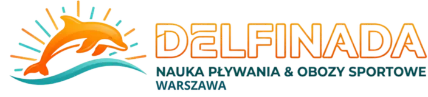
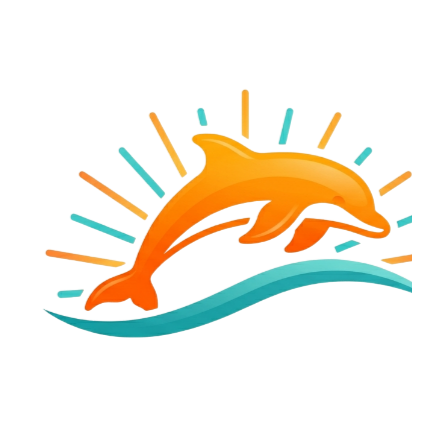
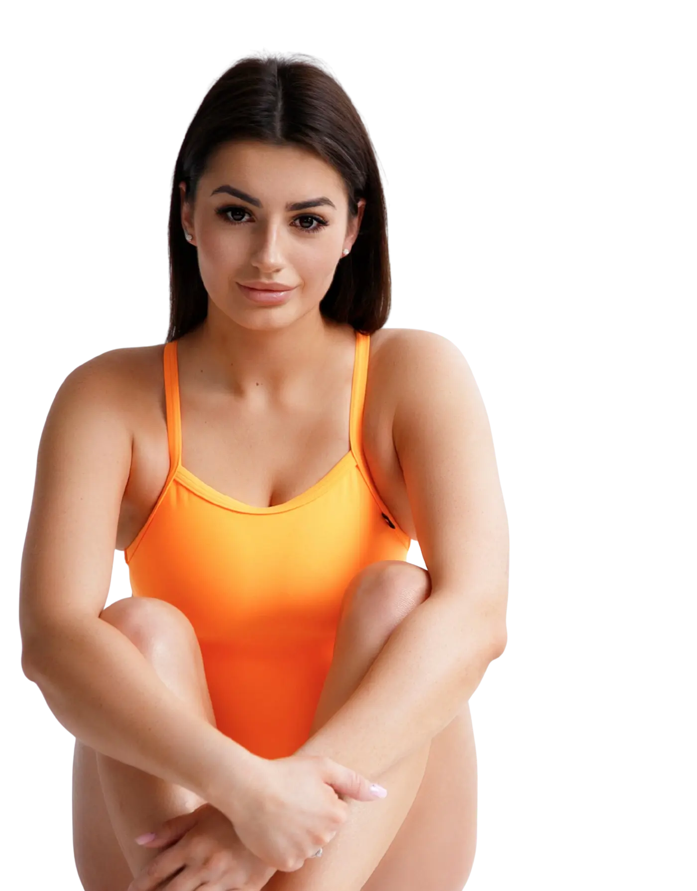

Każdy kafelek to kwadrat (format profilu Google). Aby zapisać: najedź → zrzut ekranu (Cmd+Shift+4) albo DevTools → „Capture node screenshot” na elemencie .tile. Podgląd 360px; realnie renderują się ostro do 720px.


DELFINADA
WARSZAWA
